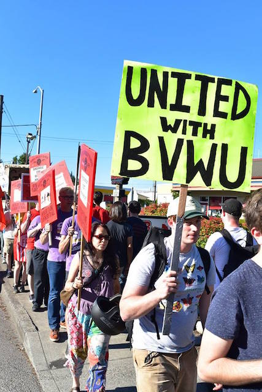

Submitted on Tue, 08/01/2017 - 7:47pm
Pete Shaw - Portland Occupier, July 19, 2017
The shakes–blackberry, chocolate hazelnut, and pumpkin spice–come and go. So do the Walla Walla onion rings, waffle fries, and asparagus. But since April of last year, solidarity has always been in season at Burgerville.
Since its formation 15 months ago, the Burgerville Workers Union (BVWU)–which is supported by the Portland Industrial Workers of the World–has been organizing for better working conditions on the job, greater benefits, and higher wages. Fighting against a management that promotes the Burgerville corporation as one which supports family values, local farmers, and sustainable practices, but treats its workers no differently than people have come to expect from larger fast food chains such as McDonald’s, the Burgerville Workers Union has slowly but surely been gathering steam in its struggle.
However, Burgerville management has so far refused to talk with the union.
On Friday July 14, the BVWU took another small but significant step toward pushing Burgerville’s management to start negotiating with it. A crowd of over 100 people picketed outside the Burgerville on Southeast 92nd and Powell during the early evening, virtually shutting down business at the store. On a hot night when one of the raspberry shakes would have made a delightful treat, only a few customers crossed the picket line.
At a rally just prior to establishing the line, Mark Medina of the BVWU told the gathered crowd, “We’re gonna shut down the shop for a couple of hours and make corporate know that workers care about benefits, about wages, and that they want Burgerville to negotiate with the union and respect the rights of workers here in Portland, Oregon. This is a union town. They should respect our rights to organize.”
That lack of respect was given official imprimatur when on June 22 Burgerville agreed to pay $10,000 to settle charges brought against it by the Oregon Bureau of Labor and Industries (BOLI) that between August 1 and August 15, 2015 the company willfully “failed to provide a meal period of not less than 30 continuous minutes during which the employee is relieved of all duties and/or failed to provide timely meal periods to twenty-eight employees” as required by law. Another 16 employees were also denied their 30-minute work-free meal period during a two-week period in December, 2016.
In addition to those charges, BOLI found that Burgerville was “employing minors under 18 in hazardous and permitted occupation” when two 17 year old employees operated a trash compactor which Oregon law has declared “hazardous and detrimental to to the health of employees under the age of 18.”
All charges pertained to the Burgerville store on NE Martin Luther King, Jr. Boulevard, near the Oregon Convention Center.
Brandon Doyle, BVWU Shop Leader at the SE 92nd and Powell Burgerville, is one of many Burgerville workers who has seen the company’s scarce regard for workers up close and personal. A few months ago Doyle was feeling ill to the point of vomiting while on the job. Instead of allowing him to go home and rest–as well as not risk getting Burgerville customers sick–Doyle’s manager insisted he remain at work. Fortunately, Doyle and his fellow workers contacted fellow union members from other stores, who then contacted Doyle’s manager, eventually resulting in Doyle being allowed to leave and likely helping prevent the spread of what ailed him. They had his back, and Doyle now wants to return the favor.